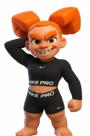
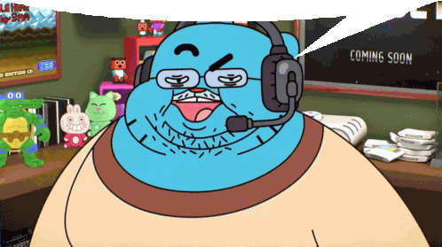

1.1 Texto
Hola,Mundo
Me llamo
Nico
1.2 Hola
Holaaa
adios
1.3 Imagenes
 phonk 
1.3 Enlaces
quiero enlazar esto, es mi musica mi youtube
Peliculas favoritas de la gente
- lalo
- El secreto de la montaña
- Sexo en Nueva York
- Tung Tung Sahur y sus amigos
- Meca
- Los Brainrots Italianos
- Adrian Layton goes to school
- American History X
Párrafo 1
Sinceramente, 1oneam y TDF están en otra liga. No hay comparación. Mientras otros intentan forzar un estilo o sonar “diferentes”, ellos simplemente lo son. 1oneam tiene ese sonido que te mete de golpe en su mundo: oscuro, melancólico, pero elegante. Cada tema suyo parece una experiencia más que una canción, con una vibra que nadie más puede replicar. Su voz, el delivery, las mezclas… todo encaja perfecto. Se nota que no sigue tendencias, las crea. Y TDF… bro, TDF tiene esa presencia que hace que todo lo que toque suene premium. Suena caro, suena pulido, suena como si cada beat estuviera hecho para él. La forma en la que encaja sus barras, los flows que saca y la manera en que se complementa con 1oneam hacen que juntos sean literalmente una dupla imparable. Cuando los dos aparecen en un tema, ya sabes que va a ser fuego. No hay skips, no hay relleno. Son de esos artistas que no necesitas entender del todo para sentir lo que transmiten. 1oneam y TDF no hacen música, hacen atmósferas. Están tan por encima que parece que ni compiten, solo existen en su propio nivel.
Párrafo 2
Nicolás Meca no solo fuma, hipnotiza. Cada vez que agarra el vaper o el cigarro, el ambiente cambia. No es solo humo, es arte en movimiento. Hace trucos tan limpios y precisos que parece que controla el aire. Los anillos le salen perfectos, las formas flotan como si el tiempo se ralentizara, y todos se quedan mirando sin decir nada, solo admirando. Tiene ese estilo natural, esa elegancia que no se puede copiar. Mientras otros intentan impresionar, él simplemente lo hace sin esfuerzo, como si el vaper fuera una extensión de su mano. Da igual dónde esté: si Meca saca el vaper, todo el mundo mira. Es de esos pocos que convierten algo tan simple en algo casi mágico. No hace trucos, hace espectáculo. Y lo mejor es que ni lo intenta: deslumbra sin querer.